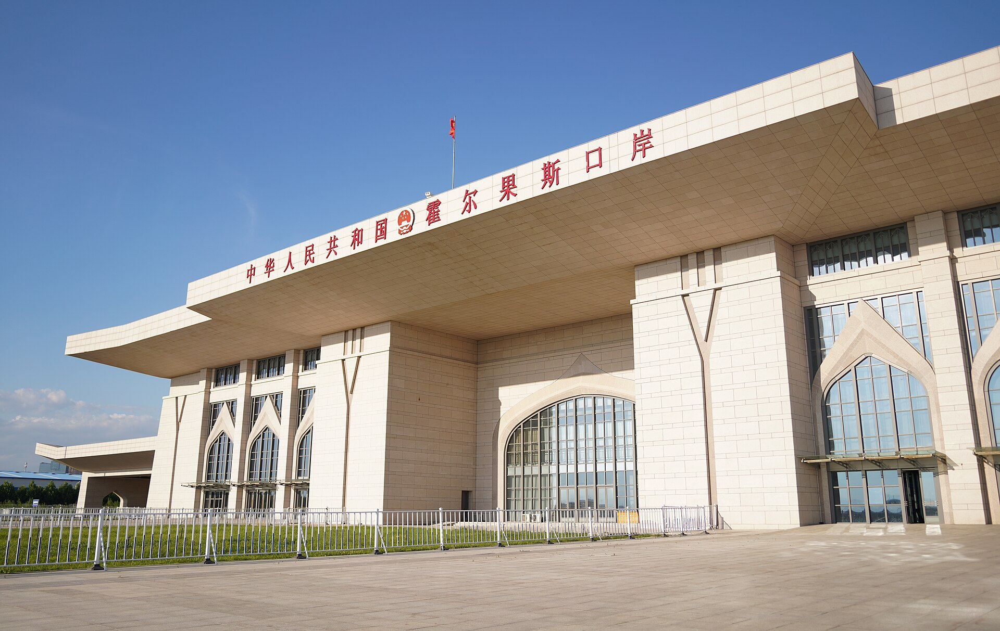

Ostonada “China Conference: Central Asia 2026”: Xitoy va mintaqa savdosi 100 milliard dollardan oshdi
7-sentabr kuni AIFC maydonchasida o‘tgan forum Gonkong nashri tomonidan Markaziy Osiyoda birinchi marta tashkil etildi. Mavzular — kapital, resurslar va raqamli Ipak yo‘li.

2026-yil 7-sentabr kuni Ostonada “China Conference: Central Asia 2026” forumi bo‘lib o‘tdi. Tadbir Gonkongdagi South China Morning Post (SCMP) nashri va “Astana” xalqaro moliya markazi (AIFC) tomonidan birgalikda tashkil etildi.
Bu Gonkong media tashkiloti tomonidan Markaziy Osiyoda shu ko‘lamda o‘tkazilgan birinchi tadbir sifatida qayd etildi.
Savdo hajmi
Forumda keltirilgan ma’lumotga ko‘ra, Xitoy va Markaziy Osiyoning beshta davlati o‘rtasidagi savdo hajmi 100 milliard dollardan oshdi.
O‘zbekiston statistikasi bu tendensiyani tasdiqlaydi: 2026-yilning yanvar–iyun oylarida Xitoy mamlakat tashqi savdosida 9,5 milliard dollar bilan birinchi o‘rinni egalladi; Rossiya 7 milliard, Qozog‘iston esa 2,8 milliard dollar bilan keyingi o‘rinlarda turdi.
Forum mavzulari
Tadbir dasturi to‘rtta asosiy yo‘nalish atrofida tuzildi:
- Makroiqtisodiyot va diplomatiya
- Kon sanoati va tabiiy resurslar
- Moliya xizmatlari va kapital jalb qilish
- Infratuzilma va bog‘lanish (connectivity)
Umumiy mavzu “Kapital, resurslar va raqamli Ipak yo‘li” deb belgilandi. Muhokamalarda kapital jalb qilish yo‘llari va ikki tomonlama listing (dual listing), “aqlli” kon sanoati va energetika o‘tishi, raqamli infratuzilma hamda sog‘liqni saqlash va kadrlar tayyorlash masalalari ko‘rib chiqildi.
AIFC maydonchasi
AIFC — 2018-yilda ish boshlagan, ingliz umumiy huquqiga asoslangan alohida sud tizimiga va o‘z regulyatoriga ega moliya markazi. Uning tarkibida Astana International Exchange (AIX) birjasi faoliyat yuritadi.
Forum bo‘lib o‘tgan haftada AIFC yana bir yirik tadbirni qabul qildi: 9–10-sentabr kunlari Astana Finance Days o‘tkazildi va unda Qozog‘iston moliya tizimining banklarga bog‘liqligini kamaytirish muhokama qilindi.
Xitoy yo‘nalishidagi loyihalar
2026-yil davomida mintaqada Xitoy bilan bog‘liq bir nechta loyiha ilgari surildi. 10-sentabr kuni Qirg‘iziston Xitoy chegarasidagi Irkeshtam o‘tkazish punktidan 70 kilometr uzoqlikda joylashgan Sari-Tosh qishlog‘ida 100 million dollargacha investitsiya ko‘zda tutilgan logistika markazi bo‘yicha memorandum imzoladi.
Shu davrda Qozog‘iston Xitoy — Markaziy Osiyo yo‘ldosh tarmog‘i bo‘yicha muzokaralarni e’lon qildi; taklif etilayotgan tizim beshta yo‘ldoshdan iborat bo‘lishi ko‘zda tutilgan.
Muvozanat masalasi
Qozog‘iston ayni paytda AQSh bilan ham texnologiya yo‘nalishidagi hamkorlikni kengaytirmoqda. 25-sentabr kuni Olmaotada Qozog‘iston–Xitoy investitsiya forumi o‘tkazilishi rejalashtirilgan va unda sun’iy intellekt mavzusi ustuvor bo‘lishi kutilmoqda.
Kuzatuvchilar mintaqa davlatlari uchun asosiy vazifa — bir necha yirik sherik bilan bir vaqtda ishlash imkoniyatini saqlab qolish ekanini qayd etadi.
Eslatma
Xitoy–Markaziy Osiyo savdosi tarixi
1991-yilda mustaqillik e’lon qilingandan keyin Xitoy va Markaziy Osiyo davlatlari o‘rtasidagi savdo hajmi nisbatan kichik edi. Keyingi o‘ttiz yil ichida u bir necha o‘n barobarga o‘sdi.
O‘sishning asosiy bosqichlari energetika infratuzilmasi bilan bog‘liq: Turkmanistondan Xitoyga gaz quvuri va Qozog‘istondan neft quvuri ishga tushirilishi savdo hajmini keskin oshirdi.
2013-yilda e’lon qilingan “Bir kamar, bir yo‘l” tashabbusi transport va infratuzilma loyihalariga qo‘shimcha turtki berdi.
Savdo tarkibi
Xitoy mintaqaga asosan mashina-uskunalar, elektronika, transport vositalari va iste’mol tovarlarini yetkazib beradi. Mintaqadan esa energiya resurslari, metallar, paxta va qishloq xo‘jaligi mahsulotlari eksport qilinadi.
So‘nggi yillarda elektromobillar alohida segmentga aylandi: O‘zbekistonda 2026-yil davomida elektr va gibrid avtomobillar importi o‘sgani, benzinli avtomobillar importi esa kamaygani qayd etildi.
Savdo balansi ko‘pincha Xitoy foydasiga nomutanosib bo‘ladi; mintaqa davlatlari bu nomutanosiblikni kamaytirish uchun qayta ishlangan mahsulot eksportini rag‘batlantirmoqda.
Kon sanoati va energetika
Forumning asosiy yo‘nalishlaridan biri kon sanoati va tabiiy resurslar bo‘ldi. Muhokamada “aqlli kon” texnologiyalari — avtomatlashtirish, ma’lumotlar tahlili va masofaviy boshqaruv — ko‘rib chiqildi.
Energetika o‘tishi mavzusi ham dasturga kiritildi. Mintaqa davlatlari qayta tiklanuvchi energetika quvvatlarini kengaytirmoqda; O‘zbekiston 2026-yil oxirigacha 6,7 GVt yangi quvvat qo‘shishni rejalashtirgan.
Moliya va listing
Forumda kapital jalb qilish yo‘llari va ikki tomonlama listing (dual listing) masalasi muhokama qilindi. Bu amaliyot kompaniyaning aksiyalari bir vaqtning o‘zida ikki birjada savdoga chiqarilishini anglatadi.
Markaziy Osiyo kompaniyalari uchun Gonkong birjasi Osiyo kapitaliga chiqish yo‘li sifatida ko‘rib chiqiladi. AIFC esa mintaqaviy listing maydonchasi bo‘lishga intilmoqda.
Raqamli Ipak yo‘li
“Raqamli Ipak yo‘li” atamasi telekommunikatsiya infratuzilmasi, ma’lumot markazlari va transchegaraviy optik tolali liniyalar loyihalariga nisbatan qo‘llanadi.
Markaziy Osiyo davlatlari uchun bu yo‘nalish internet trafigining tranzit marshrutlarini diversifikatsiya qilish imkonini beradi: hozirda trafikning katta qismi Rossiya orqali o‘tadi.
Muvozanat siyosati
Qozog‘iston Xitoy bilan texnologiya hamkorligini kengaytirish bilan bir qatorda AQSh bilan ham aloqalarni saqlab qolmoqda. 25-sentabrda Olmaotada Qozog‘iston–Xitoy investitsiya forumi o‘tkazilishi rejalashtirilgan va unda sun’iy intellekt mavzusi ustuvor bo‘lishi kutilmoqda.
2026-yil iyulida e’lon qilingan tijorat kelishuvlari hajmi 15 milliard dollardan oshgani ma’lum qilingan edi.
12-sentabr kuni Qozog‘iston prezidenti BRIKS sammiti chetida AQSh maxsus vakili bilan uchrashdi — bu ko‘p vektorli siyosatning yana bir ko‘rinishi bo‘ldi.
Mintaqadagi Xitoy loyihalari
2026-yil sentabrida Xitoy bilan bog‘liq bir nechta loyiha e’lon qilindi. 10-sentabrda Qirg‘iziston Irkeshtam o‘tkazish punktidan 70 kilometr uzoqlikda joylashgan Sari-Tosh qishlog‘ida logistika markazi bo‘yicha memorandum imzoladi; loyihaga 100 million dollargacha investitsiya ko‘zda tutilgan.
Shu davrda Qozog‘iston Xitoy — Markaziy Osiyo yo‘ldosh tarmog‘i bo‘yicha muzokaralarni e’lon qildi; taklif etilayotgan tizim beshta yo‘ldoshdan iborat bo‘lishi ko‘zda tutilgan.
Eng yirik loyiha — Xitoy–Qirg‘iziston–O‘zbekiston temir yo‘li; u bo‘yicha rasmiy kelishuvlar 2024-yilda imzolangan edi.
Ma’lumotlarni taqqoslash
Forumda keltirilgan savdo ko‘rsatkichlari turli manbalarda biroz farq qilishi mumkin: ayrim hisoblar Xitoy bojxona statistikasiga, boshqalari mintaqa davlatlarining milliy statistikasiga tayanadi.
Bunday farqlar odatda qayta eksport, transport xarajatlarining hisobga olinishi va valyuta kursi farqlari bilan izohlanadi.
Sog‘liqni saqlash va kadrlar
Forum dasturiga sog‘liqni saqlash va kadrlar tayyorlash mavzulari ham kiritildi. Mintaqada tibbiy uskunalar, farmatsevtika va telemeditsina yo‘nalishlarida xorijiy investitsiyalarga qiziqish ortmoqda.
Kadrlar masalasi esa texnologik loyihalarning amalga oshirilishi uchun asosiy shart hisoblanadi: yirik infratuzilma va raqamli loyihalar malakali muhandis va IT mutaxassislarini talab qiladi.
Media tadbiri sifatidagi ahamiyati
Forumni Gonkongning South China Morning Post nashri tashkil etdi. Bu Gonkong media tashkiloti tomonidan Markaziy Osiyoda shu ko‘lamda o‘tkazilgan birinchi tadbir sifatida qayd etildi.
Media kompaniyalar tomonidan tashkil etiladigan biznes-forumlar so‘nggi yillarda keng tarqalgan format hisoblanadi: ular auditoriya va tahliliy resurslarni tijorat tadbiri bilan birlashtiradi.
Forumda keltirilgan savdo ko‘rsatkichlari turli manbalarda biroz farq qilishi mumkin: ayrim hisoblar Xitoy bojxona statistikasiga, boshqalari mintaqa davlatlarining milliy statistikasiga tayanadi.